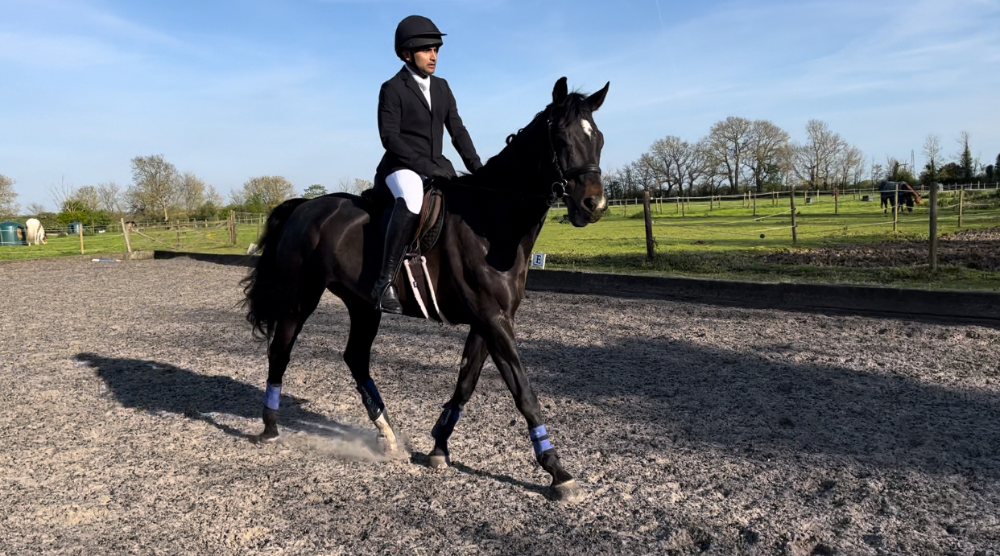
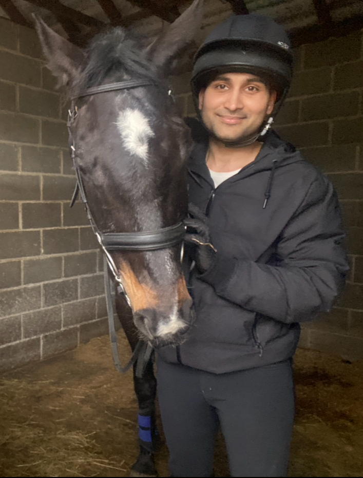
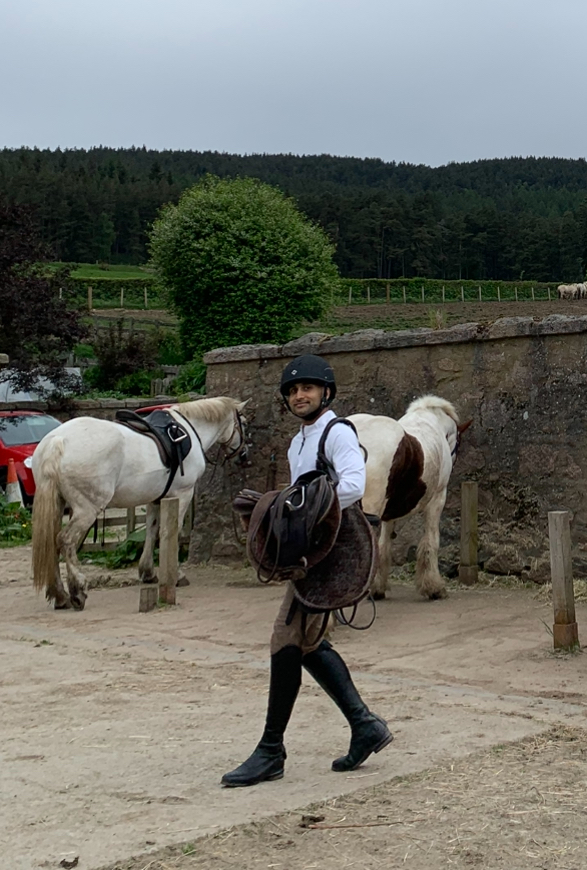
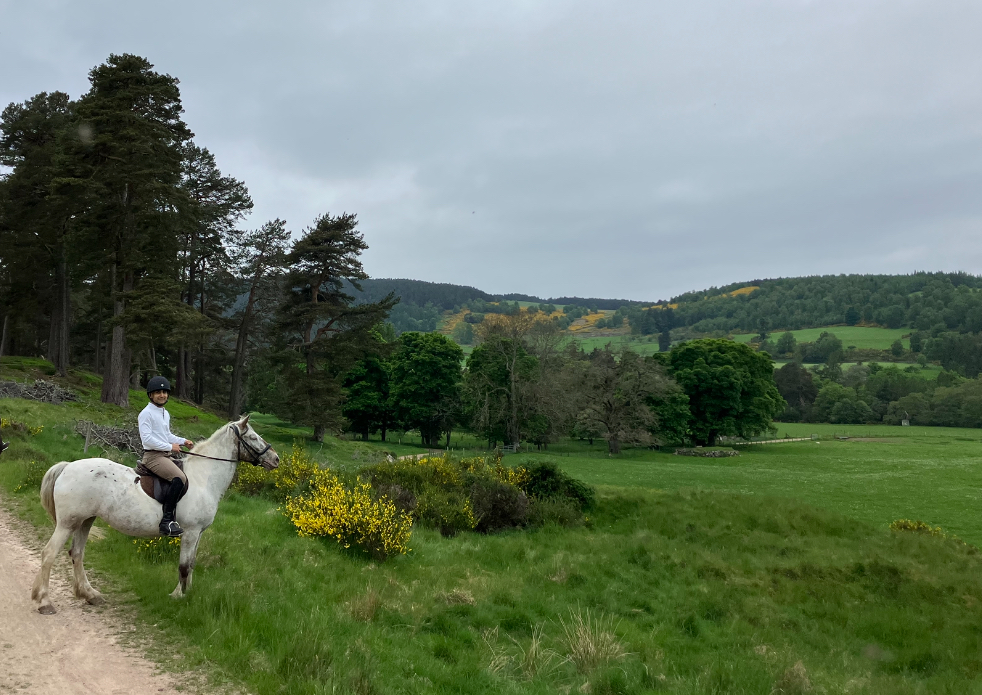
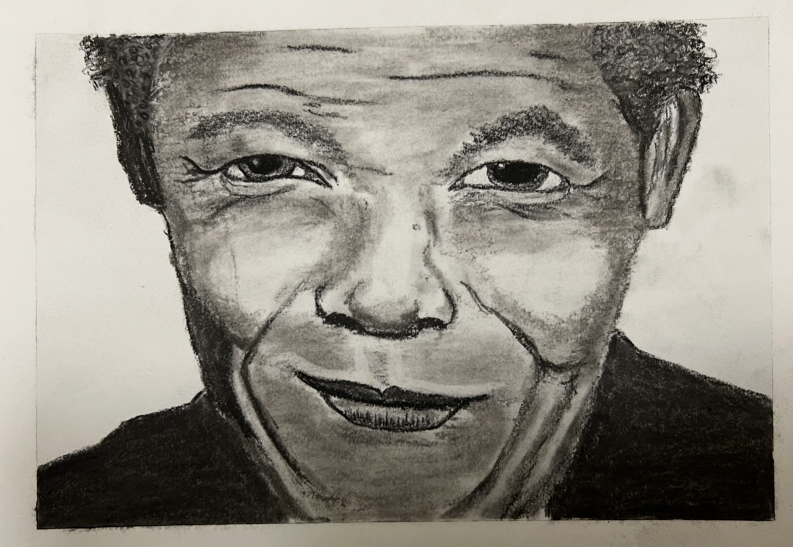
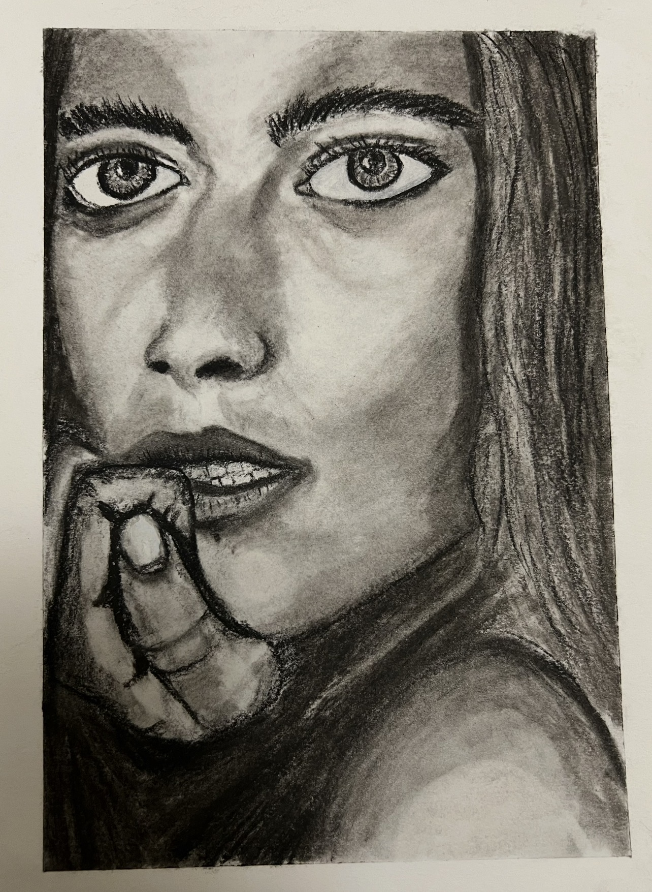
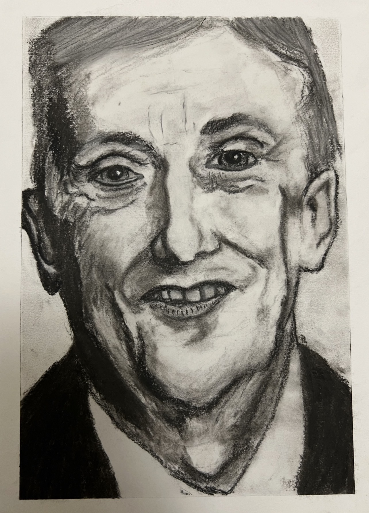
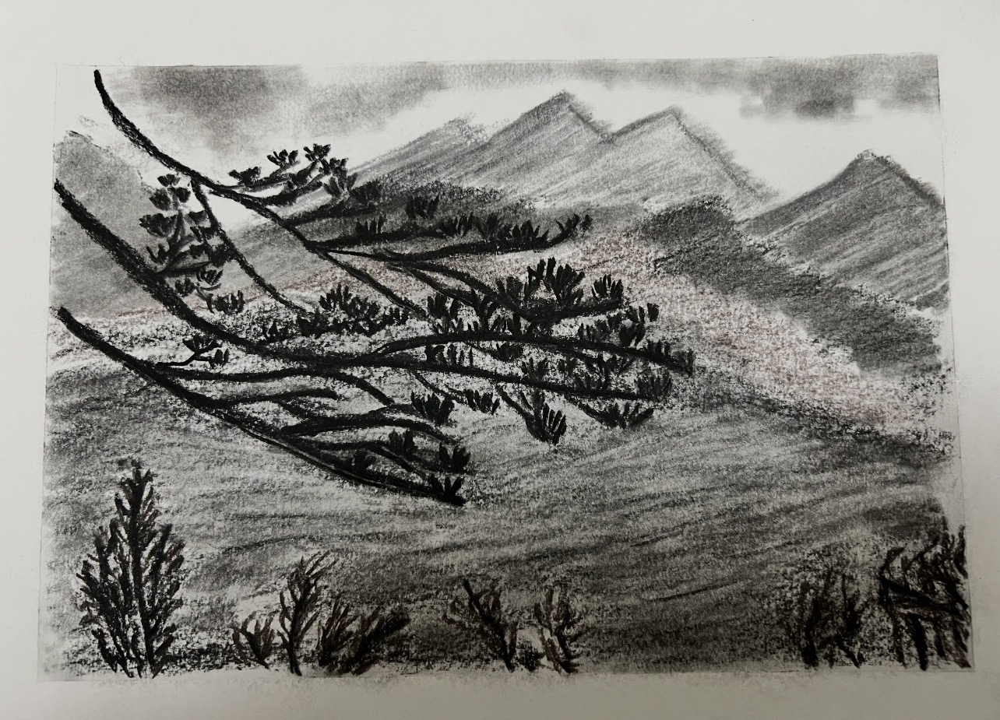

Hello and Namaste! I am Saurav, Associate Principal AI Engineer at AstraZeneca. I bring a blend of strategic leadership and hands-on technical expertise in AI and Computer Vision, adapting my role to deliver results across medicine, healthcare, and enterprise technology.
During my years at AstraZeneca, I have led and contributed to a diverse range of AI and data-driven projects in healthcare and manufacturing. My work includes productionising advanced LLM applications, implementing agentic RAG-based solutions and streamlining infrastructure delivery with code (IaC).
I have provided strategic consultation for GxP compliance and AI governance, delivered cross-functional IOT projects for defect detection in sterile manufacturing environments and created informative content such as a video on RAG-based Generative AI for enterprise audiences. I also led a two-day computer vision workshop for participants from multiple departments, supporting capability building and cross-team collaboration.
My technical expertise spans deploying scalable FastAPI and Streamlit applications, integrating state-of-the-art models like Claude, BERTopic, DINO, and Segment Anything and developing synthetic data generation techniques using NeRF. I have explored and processed complex medical imaging datasets, applying deep learning models for segmentation and organ detection within AWS Sagemaker. These experiences have enabled me to bridge strategic vision with hands-on technical delivery, driving impactful results across multidisciplinary teams.
Before joining AstraZeneca, I built expertise in AI and computer vision across healthcare, surveillance, robotics, and accessibility. I developed disease recognition and image stitching software at Sēon Diagnostics, managed large-scale datasets and deep learning models at VCA Technology, and led vision software and mobile app development for agricultural robots at Antobot. These roles established my foundation in delivering innovative, compliant, and scalable AI solutions in regulated environments.
In 2019/20, I completed my MSc in Artificial Intelligence and Big Data at Anglia Ruskin University, Cambridge, graduating with Distinction. My thesis, "An LSTM-based approach to classification of mental health issues using Natural Language Processing," achieved an 81% mark and exemplifies my ability to apply advanced machine learning to real-world problems. I consistently ranked at the top of my cohort, earning 92% in Advanced Machine Learning, 91% in Neural Computing and Deep Learning, 82% in Research Methods, 81% in Applications of Machine Learning, and 70% in Semantic Data Technologies.
Before my postgraduate degree, I spent a few years working for ZHC Systems Ltd., an accessibility software and hardware company, as a technical assistant where I contributed to accessibility solutions, focusing on user-centric mobile technologies, and tested both hardware and software in production.
If I am not infront of a computer, I like to spend my time playing tennis, practicing yoga, reading, travelling, visiting historical places and sometimes simply enjoying nature.
An LSTM-based approach to classification of mental health issues using Natural Language Processing
Applied several NLP techniques to process user text and used a bi-directional LSTM classifier to categorize it into several mental health issues. Also experimented with BERT transfer learning for the same classification.
Horse Riding
I am passionate about horse riding, which allows me to connect with nature, improve my focus, and enjoy the outdoors. Riding has taught me patience, discipline, and the importance of harmony between rider and horse.




Charcoal Drawing
Charcoal drawing is my creative outlet. I enjoy exploring light, shadow, and texture through this medium, which helps me relax and express my artistic side beyond my technical work.



